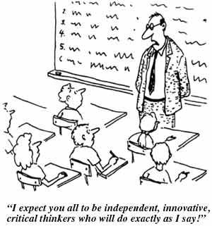

Teaching
I have a top-down approach to teaching. In planning a course, I spend a substantial fraction of my time considering what skills and knowledge I want students to leave my course with. This will of course differ between classes--most notably between classes for majors and non-majors. However, in both cases, I am more interested in the process than the specific content. For example, in a majors class the crux is not in the specifics of how a derivation is performed; it lies rather in the concepts it incorporates and the techniques and thought process involved in tackling it. I want to develop the next generation of astronomers and physicists that can solve new unsolved problems. In a non-majors class I want students to leave with the realization that critical and scientific thinking is also powerful in their personal and professional lives, independent of their career choice. Knowing where I want to end up allows me to purposefully craft lesson plans and assignments to get there. I expand on this and provide a sample syllabus for a non-major Solar System course in the Course Design section.
I believe that nothing will impact what students learn in a course more than the instructor's choice of assignments and assessments. Students are conditioned to fixate on grades, and will allot their time based on the grade breakdown a teacher sets. I therefore try to match my assessment choices as closely as possible with my course goals. More details, and a sample grading rubric for a term paper in the Solar System course I developed can be found in the Assessment section.
Once my course goals are firm and I structure my course with assessments geared to meeting those ends, I can focus on the classes themselves. My guiding principle is to have students actively engaged. This does not mean every class having a demonstration involving all the students running through the room. In my experience as a student, lecturing can be both stimulating and engaging; it just must not be a one-way street. Critical junctures require pauses, questions like "how would you go about solving this problem?", and follow-up discussion. I use 'Think-Pair-Share' questions to work through difficult concepts and also to get feedback on the understanding of material already presented. I don't ever want students to just a be listening--I want them to continually be thinking through the material, questioning it, and integrating it with their prior knowledge into a cohesive web. I consider a class with few questions not as evidence of clarity in my explanations, but rather as the result of my failure to engage students in their own critical thinking. I also find in-class demonstrations and multimedia to be powerful ways of presenting difficult concepts in more than one way, as well as of breaking up class-time and refocusing attention.
I have tried to incorporate the above pieces into a unified Teaching Philosophy.
I try to continually evolve as a teacher, discarding what doesn't work, improving what does, and being open to new ideas. Of course I manage this better at some times than others, but I like to think that the trend is always upward. I find the last area, that of being open to new ideas, to be the most challenging. It is easy to develop a teaching style that works well and to simply stay in that comfort zone. I therefore make an effort to take courses and attend workshops that force me outside of my comfort zone. Some teaching techniques I have learned simply did not work for me; but some, like student journaling, I found surprisingly effective once I gave them a chance. You can find teaching courses and and workshops I have completed, as well as my teaching experience to date, in my CV.